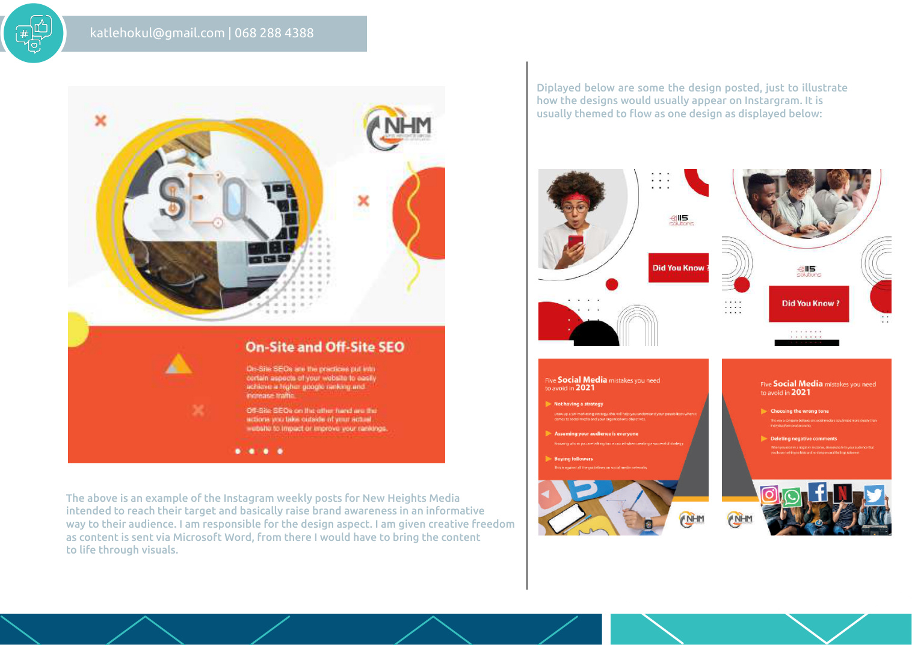

DESIGN · STORYTELLING · DIGITAL
Ideas made
visible.
I’m Katleho Kulube, a graphic and digital designer who turns information, ideas and brand stories into clear, engaging visual experiences.



THINKING
✳
Creative thinking.
Purposeful design.
My work spans visual communication, presentation design, document design, branding, editorial layout, infographics, social media and websites.
I enjoy finding the visual thread that makes a message easier to understand and more memorable. I bring attention to detail, practical problem-solving and an adaptable approach to each brief.
Have a project in mind? ↗Currently studying
Diploma in IT and Software Development
Rosebank International
A range of ways
to communicate.
A selection of work and disciplines from my portfolio. Select any project to view a larger presentation.
Good design starts
with good questions.
I aim to understand the purpose, audience and context before choosing the visual direction.
Understand
Clarify the brief, audience, industry and communication goal.
Explore
Consider references, visual direction, colour and possible concepts.
Design
Develop the selected idea into a clear and cohesive visual solution.
Refine
Review the details and make improvements in response to feedback.
Creativity is not a limited resource. The more you use it, the more you have.
INSPIRED BY MAYA ANGELOU
Let’s make
something matter.
For project enquiries, collaborations or further information, get in touch.